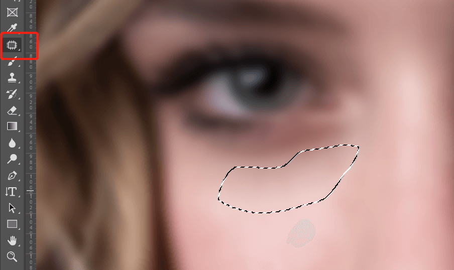
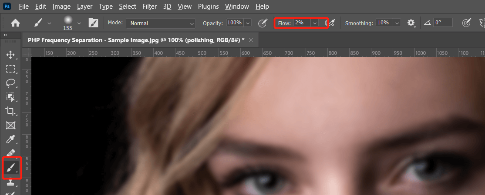
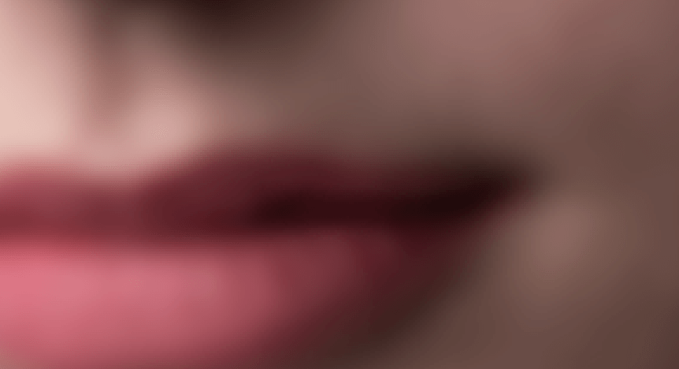

频率分离在处理人像或需要平滑表面的地方非常有效，在之前的教程中介绍过频率分离的方法，下面介绍在实际应用中，在频率分离后如何进行下一步处理。
Photoshop 皮肤处理进阶
通过频率分离修复褶皱衣服 in Photoshop
频率分离 action：PiX - Frequency Separation.atn
PHP 表示：patching修补，healing修复，polishing抛光
关于频率分离的原理和过程请参考上面的链接，下面直接使用 action 快速完成。
原图如下：
在分离图像前，我们首先简单处理皮肤明显的痘痕等瑕疵部分，使用污点修复工具即可，新建一个图层，选择 healing brush tool：
alt 选取痘痘周边皮肤，点击修复所有的痘痘，注意 sample 选择 current and below：
我们通过 action 快速分离图像，我们图像是 8 bit 模式的所以使用 FS 8bit动作(image - mode 可以查看当前图片模式)：
执行 action 过程中弹出手动设置高斯模糊值，先拉到最小，然后一点点调大直到皮肤细节消失：
action 会自动创建好分离图像图层：
下面进行 PHP 第一步 patching，将皮肤上大块的色差区域修复，使用了 patch tool。
首先关闭上面的 texture 图层，然后复制 color 图层命名为 patching：
使用 patch tool 将皮肤上有明显下次和色差的部分修复：

处理完成后打开 texture 图层查看效果：
然后第二部 healing，也就是通过 heal tool 修复一些小瑕疵部分，复制 patching 图层，使用 heal tool 进行下一步修复，同样的需要临时关闭 texture 图层。
例如我们通过 heal tool 修复额头多余的头发和面部细微部分的色差区域：
处理完成后打开 texture 图层查看效果：
第三步 polishing，也就是对皮肤高光阴影的平滑处理，让整体光线过渡更加均匀，复制 healing 图层重命名为 polishing，同样的暂时关闭 texture 图层。
这里使用笔刷工具，流量调到 2 左右即可：

我们先处理嘴唇的阴影部分，按住 alt 点击阴影部分选取颜色，然后在需要过渡的地方进行涂抹：

然后鼻子上的亮度分布我们使用同样的方法进行调整，让光线更加平顺：
根据情况调整其他地方的光线，完成后打开 texture 图层查看效果：
最终效果对比如下：
只有一条评论 (QwQ)
脸蛋好像不是很漂亮。